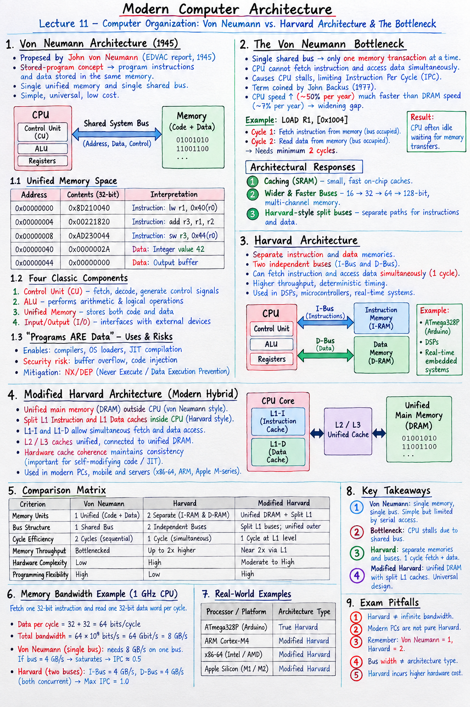

Short Notes & Visual Summary
Quick summary and core architectural blueprints for Lecture 11:
- Von Neumann Architecture (1945): Features a single unified memory holding both program code and data, accessed via a single shared system bus. Simple and universal, but limited by serial memory access.
- The Von Neumann Bottleneck: Because instructions and data must take turns crossing the single shared bus, the CPU frequently stalls waiting for memory transfers, capping achievable IPC.
- Harvard Architecture: Features separate memories and separate buses for instructions (I-Bus) and data (D-Bus). Enables simultaneous instruction fetch and data read/write in the exact same clock cycle.
- Modified Harvard Architecture: The universal modern hybrid (x86-64, ARM, Apple M-series). Uses unified main DRAM (von Neumann style) for software flexibility, combined with split L1-I and L1-D caches (Harvard style) inside the CPU die for maximum parallel throughput.
Von Neumann Model
- 1 Bus, 1 Memory Space
- Sequential 2-Cycle Fetch & Access
- Software flexibility, low cost
Pure Harvard Model
- 2 Buses, 2 Physical Memories
- Parallel 1-Cycle Fetch + Access
- DSP & Microcontroller determinism
Modified Harvard (Modern)
- Harvard on-chip (Split L1 Cache)
- Von Neumann off-chip (Unified DRAM)
- Universal modern PC & Mobile standard

Click image to open high-resolution version in new tab
Von Neumann Architecture & Stored-Program Concept
1.1 The Stored-Program Concept (1945 Blueprint)
Prior to 1945, early electromechanical and electronic calculating machines (such as the ENIAC) were hardwired for specific calculations. Reprogramming required technicians to physically manipulate patch cables, flip toggle switches, and rewire physical circuits over hours or days.
In 1945, mathematician John von Neumann (synthesizing ideas from J. Presper Eckert, John Mauchly, and Alan Turing) formalized the Stored-Program Concept in his famous "First Draft of a Report on the EDVAC". The radical core insight was:
A computer's program code (instructions) can be encoded as binary numbers and stored inside the same electronic memory as user data. To run a completely different program, the machine does not need rewiring; it simply loads a different sequence of numbers into memory.
1.2 Unified Memory Space: Code & Data Coexistence
In a von Neumann architecture, instructions and data share a single address space and reside side-by-side in main memory. The CPU hardware differentiates between an instruction word and a data value solely based on the current context of execution (e.g., whether the address was fetched during an Instruction Fetch cycle pointed to by the Program Counter):
| Hex Address | Memory Contents (32-bit Hex) | Hardware Interpretation |
|---|---|---|
| 0x00000000 | 0x8D210040 | Instruction: lw r1, 0x40(r0) |
| 0x00000004 | 0x00221820 | Instruction: add r3, r1, r2 |
| 0x00000008 | 0xAD230044 | Instruction: sw r3, 0x44(r0) |
| 0x00000040 | 0x0000002A | Data Variable: Integer value 42 |
| 0x00000044 | 0x00000000 | Data Variable: Output buffer location |
1.3 The Four Classic Components
Every von Neumann machine relies on four fundamental functional units connected via a common bus:
- Control Unit (CU): The "conductor" of the processor. Implemented as a Finite State Machine (FSM), it fetches instructions from memory, decodes them, and generates control signals for all other units.
- Arithmetic Logic Unit (ALU): Performs digital arithmetic operations (addition, subtraction, multiplication) and logical operations (AND, OR, XOR, shifts).
- Unified Memory Unit: A linear array of addressable storage locations holding both code and data.
- Input/Output (I/O) System: Interfaces with external peripherals (keyboard, display, disks, network interfaces).
1.4 "Programs ARE Data" & Security Implications
Treating code as data enables essential software innovations, but also introduces significant security attack vectors:
- Compilers & Assemblers: Compilers process source text files and write compiled machine instructions into memory as output data.
- Operating System Loaders: An OS loads an executable binary file by copying its bytes from disk into RAM memory buffers and setting the CPU Program Counter to the entry point.
- Just-In-Time (JIT) Compilation: Runtimes for JavaScript (V8 in Chrome), Java (JVM), and Python (PyPy) generate machine code dynamically at runtime and execute it immediately.
- Security Risks (Buffer Overflow / Code Injection): Attackers who exploit stack buffer overflows can overwrite return addresses or inject malicious shellcode into data buffers and trick the CPU into executing data as instructions. (Mitigated in modern OSes by NX/DEP bits: Never Execute / Data Execution Prevention).
The Von Neumann Bottleneck
2.1 Single Shared Bus Limitation
In a standard von Neumann machine, a single shared system bus (composed of Address lines, Data lines, and Control signals) connects the CPU to memory. Because there is only one set of physical wires, the bus can perform only one memory transaction at a time.
2.2 Bus Contention & Execution Stalls
The Von Neumann Bottleneck (a term coined by Turing Award winner John Backus in 1977) is the throughput limitation caused by sharing a single bus between instruction fetches and data memory accesses. The CPU cannot simultaneously fetch a new instruction AND load or store a data operand from memory in the same clock cycle.
Consider a memory-referencing instruction like LOAD R1, [0x1004]:
- Clock Cycle 1 (Instruction Fetch): The CPU uses the bus to fetch the instruction word
LOAD R1, [0x1004]from code memory. The bus is 100% occupied by instruction traffic. - Clock Cycle 2 (Data Access): The CPU decodes the instruction and uses the same bus to read the data word stored at memory address
0x1004. The bus is now occupied by data traffic.
Because the instruction fetch and data read must happen sequentially, the instruction requires a minimum of 2 bus cycles. While the CPU's ALU is capable of executing operations in sub-nanosecond clock cycles, it sits idle (stalled) waiting for the single bus to transfer bytes.
2.3 IPC Caps & The Widening Frequency Gap
Over four decades of semiconductor advancement, CPU transistor switching speeds and clock frequencies grew exponentially (~50% per year), whereas DRAM main memory bus latency improved at a much slower rate (~7% per year). This divergence means that high-speed CPUs spend an increasing proportion of their time completely starved of data.
2.4 Architectural Responses to the Bottleneck
Computer architects developed three major techniques to widen or bypass the von Neumann bottleneck:
- Hardware Caching (SRAM): Placing small, ultra-fast on-chip SRAM caches near the CPU core to service requests without touching main memory.
- Wider & Faster Buses: Expanding bus width from 16-bit to 32-bit, 64-bit, and 128-bit, along with multi-channel memory controllers (Dual-Channel DDR5).
- Harvard-Style Split Bus Paths: Physically separating the paths for instruction fetches and data accesses — leading directly to the Harvard and Modified Harvard architectures.
Harvard Architecture & Parallel Buses
3.1 Dual Memory & Dual Bus Topology
To eliminate bus contention entirely, the Harvard Architecture physically segregates the memory subsystem into two independent blocks with two dedicated set of buses:
- Instruction Memory & Instruction Bus (I-Bus): Dedicated exclusively to fetching program instructions.
- Data Memory & Data Bus (D-Bus): Dedicated exclusively to reading and writing data variables.
3.2 Simultaneous Instruction & Data Access
Because the CPU possesses separate I-Bus and D-Bus interfaces, it can fetch the next instruction over the I-Bus at the exact same moment it reads or writes a data operand over the D-Bus. What required 2 sequential cycles in von Neumann takes only 1 cycle in Harvard, up to doubling memory throughput.
3.3 Historical Origins: Harvard Mark I (1944)
The design gets its name from the Harvard Mark I computer built by Howard Aiken at Harvard University in 1944:
- Physical Separation: The Mark I stored instructions on 24-channel punched paper tape, while data numbers were stored in 72 electro-mechanical rotary dial switches and relay counters.
- Mechanical Necessity to Architectural Feature: The physical impossibility of putting punched tape into electrical relays naturally created separate paths. Today, Harvard architecture refers to electronic on-chip splits rather than paper tape and relays.
3.4 Application Domains: DSPs & Microcontrollers
True Harvard architecture is preferred in domain-specific processors where deterministic timing and high signal processing throughput outweigh the flexibility of unified memory:
- Digital Signal Processors (DSPs): Real-time audio/video filtering, Fast Fourier Transforms (FFT), and radio baseband processing require continuous streaming of data coefficients while executing loop instructions without pipeline stalls.
- Microcontrollers (MCUs): Chips like the ATmega328P (Arduino Uno) feature true Harvard topology: program instructions live in non-volatile Flash memory (32 KB) over an instruction bus, while variables live in volatile SRAM (2 KB) over a data bus.
- Real-Time Embedded Systems: Systems requiring hard real-time guarantees benefit from predictable, deterministic clock cycle counts immune to bus contention.
Modified Harvard Architecture (Modern Hybrid)
4.1 Hybrid Topology: Von Neumann Outside, Harvard Inside
Pure Harvard architecture suffers from rigid memory partitioning: if a program fills up Instruction memory while Data memory has free space, the extra RAM cannot be reallocated for code. Furthermore, compilers and OS loaders become complex when dealing with completely separate address spaces.
Modern general-purpose processors (Intel Core i9, AMD Ryzen, ARM Cortex-A78, Apple M1/M2/M3) solve this trade-off by implementing a Modified Harvard Architecture:
- Outside the CPU Chip (Main System RAM): Appears as a single, unified main DRAM memory with one unified address space — pure von Neumann style. Software sees one continuous memory.
- Inside the CPU Core (Level 1 Caches): The L1 cache is physically split into a dedicated L1 Instruction Cache (L1-I) and a dedicated L1 Data Cache (L1-D) with independent internal pipelines — pure Harvard style.
4.2 Split L1-I and L1-D Caches over Unified DRAM
The CPU execution pipeline fetches instructions from the L1-I cache over an internal instruction pipeline, while memory load/store instructions access the L1-D cache over an internal data pipeline simultaneously. If a cache miss occurs at L1, requests fall back to a unified L2 and L3 cache and ultimately to unified DRAM main memory.
4.3 Hardware Cache Coherence Management
Because code and data are split at L1 but unified in main memory, self-modifying code or JIT compiler output (writing new code as data into L1-D) creates a potential consistency hazard. The processor's Hardware Cache Coherence Unit automatically invalidates stale entries in L1-I when L1-D is written to, preserving the illusion of a single unified memory for software.
4.4 Real-World Processor Classification
| Processor / Platform | Architectural Classification | Memory & Bus Layout Details |
|---|---|---|
| ATmega328P (Arduino) | True Harvard | Physical Flash for instructions, physical SRAM for data, completely separate address spaces. |
| ARM Cortex-M4 (Embedded) | Modified Harvard | Bus matrix with I-Code and D-Code internal buses targeting a unified 32-bit linear address space. |
| x86-64 (Intel / AMD Desktop) | Modified Harvard | Unified main DRAM & L2/L3 caches (von Neumann) paired with split 32KB L1-I and 32KB L1-D caches per core. |
| Apple Silicon (M1 / M2 / M3) | Modified Harvard | Ultra-wide split L1 caches (192KB L1-I + 128KB L1-D on P-cores) over unified L2 and unified System Memory. |
Quantitative Bandwidth & Comparison Matrix
5.1 Von Neumann vs. Harvard Comparison Matrix
The table below presents the full architectural comparison required for examinations:
| Criterion | Von Neumann Architecture | Harvard Architecture | Modified Harvard Architecture |
|---|---|---|---|
| Memory Units | 1 Unified Memory (Code + Data) | 2 Separate Memories (I-RAM & D-RAM) | Unified System DRAM + Split L1 Cache |
| Bus Structure | 1 Shared System Bus | 2 Independent Buses (I-Bus & D-Bus) | Split internal L1 buses; unified outer bus |
| Cycle Efficiency | 2 Cycles (Sequential Fetch & Load) | 1 Cycle (Simultaneous Fetch + Load) | 1 Cycle at L1 Cache level |
| Memory Throughput | Bottlenecked by single bus | Up to 2x higher throughput | Near 2x pipeline throughput via L1 |
| Hardware Complexity | Low (Fewer pins, wires, & die area) | High (Double pin count & bus wiring) | Moderate to High (Cache coherence logic) |
| Programming Flexibility | High (Programs ARE data; free allocation) | Low (Rigid partitioned memory spaces) | High (Single linear software address space) |
5.2 Worked Calculation: Memory Bandwidth Analysis
To quantify the von Neumann bottleneck versus Harvard parallel throughput, consider the following standard architectural problem:
A CPU operates at a clock frequency of \(f = 1\text{ GHz}\) (\(1 \times 10^9\text{ cycles/second}\)). On every clock cycle, the CPU pipeline fetches one 32-bit instruction word and reads one 32-bit data operand from memory.
Required: Calculate the required memory bus bandwidth for both von Neumann and Harvard architectures, and explain how bus saturation occurs.
Step-by-Step Mathematical Solution
- Total Data Movement per Cycle: $$\text{Bits per cycle} = \text{Instruction Size} + \text{Data Size} = 32\text{ bits} + 32\text{ bits} = 64\text{ bits/cycle}$$
- Total Required Bandwidth (\(B_{\text{total}}\)): $$B_{\text{total}} = 64\text{ bits/cycle} \times 1 \times 10^9\text{ cycles/second} = 64 \times 10^9\text{ bits/second} = 64\text{ Gbit/s}$$ $$\text{Converting to Bytes/sec:} \quad B_{\text{total}} = \frac{64\text{ Gbit/s}}{8\text{ bits/Byte}} = 8\text{ GB/s}$$
- Von Neumann Architecture Bandwidth Analysis:
Because a von Neumann processor has only ONE single bus, that single bus must carry the entire \(8\text{ GB/s}\) workload. If the single bus is rated at only \(4\text{ GB/s}\), the bus saturates 100%, causing the CPU pipeline to stall for 1 extra clock cycle per instruction. Max achievable IPC drops to 0.5.
- Harvard Architecture Bandwidth Analysis:
A Harvard processor splits the workload across TWO independent buses:
$$\text{I-Bus Bandwidth} = 32\text{ bits} \times 1 \times 10^9\text{ Hz} = 32\text{ Gbit/s} = 4\text{ GB/s}$$ $$\text{D-Bus Bandwidth} = 32\text{ bits} \times 1 \times 10^9\text{ Hz} = 32\text{ Gbit/s} = 4\text{ GB/s}$$Each bus operates concurrently at \(4\text{ GB/s}\). Neither bus saturates, allowing the CPU to sustain a maximum IPC of 1.0 without stalling.
5.3 Exam Pitfalls & Misconceptions
- Misconception 1: "Harvard Architecture has infinite bandwidth and no bottlenecks."
Correction: Harvard eliminates the fetch-vs-data bus collision bottleneck, but total system memory latency (DRAM delay) still limits absolute speed. - Misconception 2: "Modern PCs are pure Harvard because they have L1-I and L1-D caches."
Correction: Modern PCs are Modified Harvard because main memory (DRAM) and lower-level caches (L2/L3) remain unified in a von Neumann space. - Misconception 3: Swapping the definitions under pressure.
Correction: Remember: Von Neumann = 1 (One memory, one bus). Harvard = 2 (Two memories, two buses). - Misconception 4: Conflating Bus Width with Address Space.
Correction: Bus width (e.g., 64-bit data bus) refers to parallel wire count per transfer. Architecture topology (Harvard vs von Neumann) refers to bus separation. - Misconception 5: Forgetting that Harvard incurs a hardware cost.
Correction: Harvard doubles memory decoder logic, bus routing, and chip pinout count, making silicon die area more expensive.
5.4 Exit Ticket & Rapid-Fire Questions
Self-Assessment Check
- Q1: What specific hardware component creates the von Neumann bottleneck?
Answer: The single shared system bus connecting CPU to unified memory. - Q2: Why can a Harvard processor perform an instruction fetch and a data read in 1 cycle?
Answer: Because it possesses separate instruction (I-Bus) and data (D-Bus) buses that operate simultaneously. - Q3: Which cache level in a modern Intel or AMD CPU implements Harvard architecture?
Answer: The Level 1 (L1) cache, which is physically split into L1-I and L1-D.
Original PDF Notes
Below is the original PDF document for your reference: